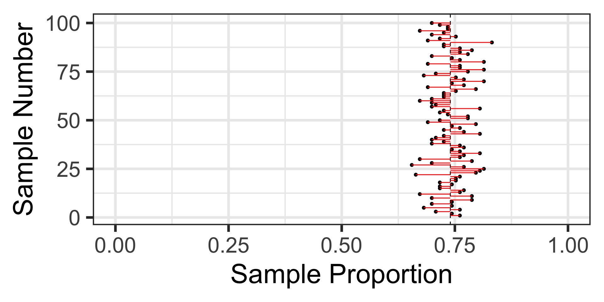

Inference with Categorical Data
October 21, 2024
Warm-Up Problem
Use the Central Limit Theorem to answer the following question.
Scenario (Polling Results): In a past election, 55% of the voters supported Candidate A. A polling organization takes a random sample of 500 voters and finds that 53% of them support Candidate A. What is the probability that a sample of 500 voters would show 53% or less support for Candidate A?
The Highlights
- Descriptive Statistics versus Inferential Statistics
- Two Types of Inferential Task
- Estimating a Population Parameter
- Testing a Claim About a Population Parameter
- Reminder on the Sampling Distribution and Central Limit Theorem
- Sampling Error
- Confidence Intervals for Parameter Estimation
- Hypothesis Testing for Claims About Parameters
- Example Problems
- Summary
Descriptive and Inferential Statistics
Descriptive Statistics gives us the tools necessary to describe the data we have
- Summary Statistics (mean, median, standard deviation, counts, etc.)
- Data visualizations
Aside: Before moving forward, we need to explicitly clarify the difference between Sample Statistics and Population Parameters
- A sample statistic is a summary measure belonging to a sample – this could be a sample mean (\(\bar{x}\)), sample standard deviation (\(s\)), etc.
- A population parameter is a summary measure belonging to an entire population – this could be the population mean (\(\mu\)), population standard deviation (\(\sigma\)), etc.
Note: It is not generally possible to observe population parameters due to the infeasibility of conducting a true Census
Inferential Statistics consists of tools and methods for using sample data as evidence to make and test claims about a population
Reminder on Proportions
As we mentioned last time, we use proportions to summarize categorical data
Categorical data results from questions whose response results in a grouping
- “Have you attended a college sporting event at SNHU?”
- “Are you vegan, vegetarian, pescatarian, or omnivore?”
Proportions of Interest: In the cases above,
- we may be interested in the proportion of all SNHU students who have attended at least one sporting event at the University
- we may be interested in the proportion of the adult population in the United States who choose not to eat any meat or fish (are either vegan or vegetarian).
Proportions measure part of a whole, and are typically represented as a decimal value between 0 and 1 – alternatives include fractions or percentages.
We compute a sample proportion by taking the number of observations with the characteristic we are interested in and dividing it by the total sample size.
A sample proportion serves as an estimate for a population proportion
Sampling Variation
When we collect sample data, we get an estimate for the population parameter.
We do this because we want to know the population parameter, even though we are unable to measure it directly.
I’m going to take a random sample of 17 individuals from a voting population considering the fictitious Proposition B-52, making it illegal to pop bubble-wrap in public places. The results of the individuals’ voting plans appear below.
[1] "Against" "In-Favor" "Against" "In-Favor" "Against" "In-Favor"
[7] "In-Favor" "In-Favor" "Against" "Against" "Against" "In-Favor"
[13] "In-Favor" "Against" "In-Favor" "Against" "Against"
The estimated proportion in favor of Proposition B-52 is about 0.471
Is the population proportion in favor of Proposition B-52 equal to 0.471?
No, but the sample provides an estimate for the population proportion.
Sampling Variation
Here’s another random sample of 17 individuals’ voting preference on Proposition B-52.
[1] "In-Favor" "Against" "In-Favor" "In-Favor" "Against" "Against"
[7] "In-Favor" "In-Favor" "In-Favor" "In-Favor" "In-Favor" "In-Favor"
[13] "In-Favor" "In-Favor" "Against" "In-Favor" "In-Favor"
The estimated proportion from this sample is 0.765
Okay, so what can the results from a random sample actually tell us?
Sampling Variation and Sampling Error
The result from our first sample appears in the plot on the right.
Sampling Variation and Sampling Error
We’ve added in the estimate from our second sample as well.
Sampling Variation and Sampling Error
Here’s the result of a third random sample of 17 individuals.
Sampling Variation and Sampling Error
Let’s take 97 more random samples and plot the results from all of these random samples containing 17 voters each…
Sampling Variation and Sampling Error
Let’s take 97 more random samples and plot the results from all of these random samples containing 17 voters each…
What information can we take away from these 100 random samples?
Sampling Variation and Sampling Error
A sample of 17 individuals is quite small and leaves lots of uncertainty.
Let’s take samples of 113 individuals instead
Here are 100 random samples of 113 voters each.
What do we feel comfortable claiming now?
Sampling Variation and Sampling Error (Summary, So Far…)
Each sample provides us with a summary statistic (a sample proportion) which serves as an estimate for the population proportion.
Each sample results in a different summary statistic – this is referred to as sampling variation
Sampling Variation and Sampling Error
Let’s revisit those 100 random samples of 113 individuals.
Sampling Variation and Sampling Error
Let’s revisit those 100 random samples of 113 individuals.
That black dashed line is at the underlying population proportion (0.74)
Sampling Variation and Sampling Error
Let’s revisit those 100 random samples of 113 individuals.

Now, these red horizontal lines represent the sampling error – how far the sample statistic falls from the true population proportion.
Distribution of Sampling Errors
Let’s switch our view here and look at the distribution of sampling errors.
Distribution of Sampling Errors
In case you aren’t convinced, here’s the distribution of sampling errors from 50,000 random samples of 113 individuals each.
Summary of Sampling Variation and Sampling Error
Each sample provides us with a summary statistic (a sample proportion) which serves as an estimate for the population proportion.
Each sample results in a different summary statistic – this is referred to as sampling variation.
Each sample’s summary statistic has some deviation from the population proportion – that deviation is called the sampling error.
The distribution of sampling errors is approximately normal\(^*\)
In fact, because of this, the distribution of sample proportions is approximately normal and, according to the Central Limit Theorem, …
Summary of Sampling Variation and Sampling Error
Each sample provides us with a summary statistic (a sample proportion) which serves as an estimate for the population proportion.
Each sample results in a different summary statistic – this is referred to as sampling variation.
Each sample’s summary statistic has some deviation from the population proportion – that deviation is called the sampling error.
The distribution of sampling errors is approximately normal\(^*\)
In fact, because of this, the distribution of sample proportions is approximately normal and, according to the Central Limit Theorem, …
\[p \sim N\left(\mu = p, S_E = \sqrt{\frac{p\left(1 - p\right)}{n}}\right)\]
When is the Distribution of Sample Proportions Approximately Normal?
Remember, from last time, that the Central Limit Theorem requires samples that are “large enough”…
Success-Failure Condition: As a rule of thumb, we can assume that the sampling distribution for proportions is approximately normal as long as our samples are large enough that we expect at least 10 successes and at least 10 failures.
That is,
\[\begin{array}{lcl} n\cdot p & \geq & 10\\
n\cdot\left(1 - p\right) & \geq & 10\end{array}\]
A Serious Problem…
In all of our most recent discussions, we’ve been simulating a sampling distribution to help us.
Unfortunately, doing this requires knowledge of the population parameter
If we had that knowledge, then there would be no need for statistical inference…
The Problem: We take a single sample and attempt to draw inferences from it.
A Serious Problem…
In all of our most recent discussions, we’ve been simulating a sampling distribution to help us.
Unfortunately, doing this requires knowledge of the population parameter
If we had that knowledge, then there would be no need for statistical inference…
The Problem: We take a single sample and attempt to draw inferences from it, but which sample do we get?
A Serious Problem…
In all of our most recent discussions, we’ve been simulating a sampling distribution to help us.
Unfortunately, doing this requires knowledge of the population parameter
If we had that knowledge, then there would be no need for statistical inference…
The Problem: We take a single sample and attempt to draw inferences from it, but which sample do we get?
A Serious Problem…
In all of our most recent discussions, we’ve been simulating a sampling distribution to help us.
Unfortunately, doing this requires knowledge of the population parameter
If we had that knowledge, then there would be no need for statistical inference…
The Problem: We take a single sample and attempt to draw inferences from it, but which sample do we get?
Confidence Intervals: Estimating a Population Proportion
We know that our sample proportion will provide an estimate for our population proportion
We also know that our sample proportion will almost surely be incorrect
We need to try and quantify how far off that sample estimate is likely to fall.
General Confidence Interval Formula: Provided that the sampling distribution is approximately normal, we can construct a confidence interval using the following form:
\[\left(\texttt{point estimate}\right) \pm \left(\texttt{critical value}\right)\cdot\left(\texttt{standard error}\right)\]
- The point estimate is our sample statistic (ie. sample proportion)
- The critical value depends on the level of confidence we want in capturing the population parameter
- The standard error is the standard deviation of the sampling distribution
Confidence Intervals: Visual Intuition
Before we work through the construction of a confidence interval, let’s build some intuition
- What does a confidence interval actually mean?
- How does the level of confidence impact the intervals constructed?
Confidence Intervals: Visual Intuition
Before we work through the construction of a confidence interval, let’s build some intuition
- What does a confidence interval actually mean?
- How does the level of confidence impact the intervals constructed?
Confidence Intervals: Visual Intuition
Before we work through the construction of a confidence interval, let’s build some intuition
- What does a confidence interval actually mean?
- How does the level of confidence impact the intervals constructed?
Confidence intervals with lower levels of confidence are more narrow, but also more likely to miss the true population proportion
A First Confidence Interval
Scenario: A study finds that 380 out of 1,000 randomly selected households use some form of renewable energy (e.g., solar panels, wind turbines). Construct a 95% confidence interval for the proportion of households using renewable energy.
General Strategy: Check out the general strategy document here
- Read the problem carefully \(\checkmark\)
- Estimate the population proportion of households using some form of renewable energy
- The “formula” for the confidence
interval is
A First Confidence Interval
Scenario: A study finds that 380 out of 1,000 randomly selected households use some form of renewable energy (e.g., solar panels, wind turbines). Construct a 95% confidence interval for the proportion of households using renewable energy.
General Strategy: Check out the general strategy document here
- Read the problem carefully \(\checkmark\)
- Estimate the population proportion of households using some form of renewable energy
- The “formula” for the confidence
interval is
\[\scriptsize{\left(\begin{array}{c}\texttt{point}\\ \texttt{estimate}\end{array}\right) \pm \left(\begin{array}{c}\texttt{critical}\\ \texttt{value}\end{array}\right)\cdot \left(\begin{array}{c}\texttt{standard}\\ \texttt{error}\end{array}\right)}\]
- The point estimate is \(p = \frac{380}{1000}\), so \(p = 0.38\)
- The standard error is given by \(S_E = \sqrt{\frac{0.38\cdot\left(1 - 0.38\right)}{1000}}\), so \(S_E \approx 0.0153\)
- The critical value is \(z_{\alpha/2} = 1.96\)
- The confidence bounds are
\(0.38 \pm 1.96\cdot\left(0.0153\right) \left\{\begin{array}{lcl} 0.38 + 0.030 & = & 0.410\\ 0.38 - 0.030 & = & 0.350\end{array}\right.\)
- We are 95% confident that the true proportion of households using some form of renewable energy is between 0.35 and 0.41.
Ask Me At Least Two Questions
Constructing a confidence interval involves many steps
This is a process that will almost surely take you time and lots of practice to master
In my experience, very few students (myself included) feel comfortable with statistical inference quickly – be sure to ask questions early and often
Intuition for Testing Claims
Another type of inferential task that we often want to conduct is to test a claim about a population parameter.
We do this through indirect reasoning…
- We assume that the claim we are testing is false
- We measure how compatible our observed data are with a reality in which the claim is false
The idea is that,
- if it is not terribly unlikely that we would observe our data in this reality, then it may be the case that the claim is actually false
- if our data is very unlikely to be observed in a reality where the claim is false, then our assumption is probably wrong and it is likely that the claim being tested is true
If we use a low enough threshold for what it means for our observed data to be “unlikely”, then we can make justifiable conclusions
- Generally, we use thresholds like 0.10, 0.05, or 0.01
The Hypothesis Testing Framework
We’ll outline the steps involved in conducting a hypothesis test below, before completing an example
Read the scenario carefully and determine whether you are testing a claim about a mean, a proportion, comparison of means, or comparison of proportions.
Identify the claim being tested and state the null hypothesis (\(H_0\)) and alternative hypothesis (\(H_a\)). The null hypothesis represents the “status quo” or “no difference” and always involves an equal sign, while the alternative hypothesis is the claim to be tested and involves one of: \(<,~>,~\neq\)
Draw a picture of your alternative hypothesis, shading in the tails corresponding to samples that would satisfy the alternative hypothesis.
Set the level of significance (\(\alpha\)) for the test. The level of significance is the “cut-off” for a sample being unusual/unlikely/unexpected. The standard cutoff is \(\alpha = 0.05\), unless we are told otherwise.
Compute t test statistic, where \(\displaystyle{\texttt{test statistic} = \frac{\left(\texttt{point estimate}\right) - \left(\texttt{null value}\right)}{S_E}}\)
- The point estimate comes from the sample data
- The null value comes from the null hypothesis
- The standard error (\(S_E\)) formula is found on the Standard Error Decision Tree
The test statistic is just a boundary value, use it along with your picture from step 3 to calculate a \(p\)-value (the probability of observing data at least as extreme as ours if the null hypothesis were true).
Compare your \(p\)-value to the level of significance (\(\alpha\)) demanded by your test and make a decision about whether or not to reject the null hypothesis.
Interpret the result of your hypothesis test in the context appropriate for your scenario.
Note: This is another lengthy procedure which will take time and practice to master – ask questions early and often.
Hypothesis Testing: An Example
Scenario: A pharmaceutical company claims that fewer than 10% of patients experience side effects from a new drug. In a clinical trial, 40 out of 500 patients reported side effects. Test the company’s claim at a 5% significance level.
- We’re testing a claim on a single population proportion \(\checkmark\)
- The hypotheses are: \(\begin{array}{lcl} H_0 & : & p = 0.10\\ H_a & : & p < 0.10\end{array}\)
- See the picture of the alternative hypothesis below:
Hypothesis Testing: An Example
Scenario: A pharmaceutical company claims that fewer than 10% of patients experience side effects from a new drug. In a clinical trial, 40 out of 500 patients reported side effects. Test the company’s claim at a 5% significance level.
- We’re testing a claim on a single population proportion \(\checkmark\)
- The hypotheses are: \(\begin{array}{lcl} H_0 & : & p = 0.10\\ H_a & : & p < 0.10\end{array}\)
- See the picture of the alternative hypothesis below:
- Set \(\alpha = 0.05\)
Hypothesis Testing: An Example
Scenario: A pharmaceutical company claims that fewer than 10% of patients experience side effects from a new drug. In a clinical trial, 40 out of 500 patients reported side effects. Test the company’s claim at a 5% significance level.
- We’re testing a claim on a single population proportion \(\checkmark\)
- The hypotheses are: \(\begin{array}{lcl} H_0 & : & p = 0.10\\ H_a & : & p < 0.10\end{array}\)
- See the picture of the alternative hypothesis below:
- Set \(\alpha = 0.05\)
- We calculate the test statistic
Hypothesis Testing: An Example
Scenario: A pharmaceutical company claims that fewer than 10% of patients experience side effects from a new drug. In a clinical trial, 40 out of 500 patients reported side effects. Test the company’s claim at a 5% significance level.
- We’re testing a claim on a single population proportion \(\checkmark\)
- The hypotheses are: \(\begin{array}{lcl} H_0 & : & p = 0.10\\ H_a & : & p < 0.10\end{array}\)
- See the picture of the alternative hypothesis below:
- Set \(\alpha = 0.05\)
- We calculate the test statistic
\[\begin{align*} \texttt{test statistic} &= \frac{\left(\frac{40}{500}\right) - 0.1}{\sqrt{\frac{0.1\cdot\left(1 - 0.1\right)}{500}}}\\
&\approx \frac{0.08 - 0.1}{0.0134}\\
&\approx -1.49\end{align*}\]
- We’ll draw our boundary value and calculate our \(p\)-value
Hypothesis Testing: An Example
Scenario: A pharmaceutical company claims that fewer than 10% of patients experience side effects from a new drug. In a clinical trial, 40 out of 500 patients reported side effects. Test the company’s claim at a 5% significance level.
- We’re testing a claim on a single population proportion \(\checkmark\)
- The hypotheses are: \(\begin{array}{lcl} H_0 & : & p = 0.10\\ H_a & : & p < 0.10\end{array}\)
- See the picture of the alternative hypothesis below:
- Set \(\alpha = 0.05\)
- We calculate the test statistic
\[\begin{align*} \texttt{test statistic} &= \frac{\left(\frac{40}{500}\right) - 0.1}{\sqrt{\frac{0.1\cdot\left(1 - 0.1\right)}{500}}}\\
&\approx \frac{0.08 - 0.1}{0.0134}\\
&\approx -1.49\end{align*}\]
- We’ll draw our boundary value and calculate our \(p\)-value
Hypothesis Testing: An Example
Scenario: A pharmaceutical company claims that fewer than 10% of patients experience side effects from a new drug. In a clinical trial, 40 out of 500 patients reported side effects. Test the company’s claim at a 5% significance level.
- We’re testing a claim on a single population proportion \(\checkmark\)
- The hypotheses are: \(\begin{array}{lcl} H_0 & : & p = 0.10\\ H_a & : & p < 0.10\end{array}\)
- See the picture of the alternative hypothesis below:
- Set \(\alpha = 0.05\)
- We calculate the test statistic
\[\begin{align*} \texttt{test statistic} &= \frac{\left(\frac{40}{500}\right) - 0.1}{\sqrt{\frac{0.1\cdot\left(1 - 0.1\right)}{500}}}\\
&\approx \frac{0.08 - 0.1}{0.0134}\\
&\approx -1.49\end{align*}\]
- We’ll draw our boundary value and calculate our \(p\)-value
- \(p\)-value \(=\)
pnorm(-1.49, 0, 1) \(\approx\) 0.0681121
Hypothesis Testing: An Example
Scenario: A pharmaceutical company claims that fewer than 10% of patients experience side effects from a new drug. In a clinical trial, 40 out of 500 patients reported side effects. Test the company’s claim at a 5% significance level.
- We’re testing a claim on a single population proportion \(\checkmark\)
- The hypotheses are: \(\begin{array}{lcl} H_0 & : & p = 0.10\\ H_a & : & p < 0.10\end{array}\)
- See the picture of the alternative hypothesis below:
- Set \(\alpha = 0.05\)
- The \(p\)-value of about 0.0681 indicates that samples like ours are not extremely unlikely if the population proportion is 10% or higher. We fail to reject the null hypothesis and it may be the case that 10% or more of patients experience side-effects.
- We calculate the test statistic
\[\begin{align*} \texttt{test statistic} &= \frac{\left(\frac{40}{500}\right) - 0.1}{\sqrt{\frac{0.1\cdot\left(1 - 0.1\right)}{500}}}\\
&\approx \frac{0.08 - 0.1}{0.0134}\\
&\approx -1.49\end{align*}\]
- We’ll draw our boundary value and calculate our \(p\)-value
- \(p\)-value \(=\)
pnorm(-1.49, 0, 1) \(\approx\) 0.0681121
Examples to Try: Influencer and Viral Videos
Scenario: A social media influencer claims that 60% of their followers have watched their latest viral video. A marketing company surveys 400 randomly selected followers and finds that 54% have actually watched the video. Is there enough evidence to reject the influencer’s claim at the 5% significance level?
Examples to Try: Fast Food Preferences
Scenario: A fast food chain claims that 70% of customers prefer its chicken sandwich over its competitors’. A random sample of 300 customers shows that only 65% prefer the chain’s sandwich. Construct a 90% confidence interval for the true proportion of customers who prefer the sandwich. Does the chain’s claim fall within the confidence interval?
Examples to Try: Vaccine Approval Rate
Scenario: In clinical trials, a new vaccine was found to be effective in 85% of cases. After the vaccine was approved, a public health survey randomly sampled 1,200 people who received the vaccine and found that 83% of them reported its effectiveness. Is this evidence that the true effectiveness rate of the vaccine is different from 85%? Test at the 1% significance level.
Examples to Try: Coffee Shop Loyalty Cards
Scenario: A coffee shop chain claims that 40% of its customers use loyalty cards. A random sample of 250 customers reveals that 38% of them use the loyalty cards. At the 10% significance level, can you reject the coffee shop’s claim?
Examples to Try: Recycling Habits in a City
Scenario: A city’s environmental department claims that 65% of its residents participate in curbside recycling programs. A local survey of 800 randomly selected residents finds that 68% of them recycle. Construct a 90% confidence interval for the true proportion of recyclers in the city. Does this support the department’s claim?
Examples to Try: Return Rates for an Online Store
Scenario: An online store states that its customer return rate is 8%. A customer service audit randomly selects 700 transactions and finds that 6.5% of the customers returned items. Construct a 95% confidence interval for the true return rate. Is the store’s stated return rate within this interval?
Examples to Try: Video Game Console Popularity
Scenario: A gaming company believes that 75% of video game players prefer their console over competitors’. A survey of 500 gamers reveals that 72% prefer the company’s console. Construct a 98% confidence interval for the true proportion of gamers who prefer the console. Does the company’s claim fall within this interval?
Examples to Try: Support for a New Environmental Policy
Scenario: A politician claims that a minority of the public supports a new environmental policy. A random sample of 900 people finds that 54% of them support the policy. At the 5% significance level, can you reject the politician’s claim?
Next Time…
Practicing with Inference